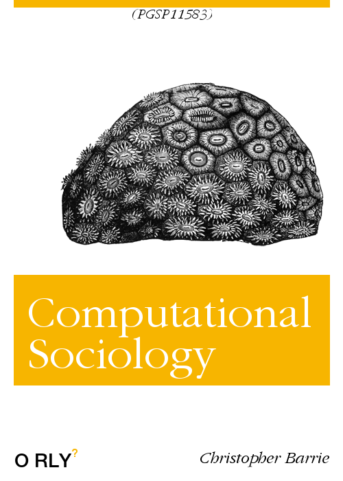

print("Computational Sociology")[1] "Computational Sociology"
This is the course book we will be using for Computational Sociology (PGSP11583).
print("Computational Sociology")[1] "Computational Sociology"The book is a “live” document meaning I will be updating as we progress together through the course.
The course is structured of alternating weeks of substantive and technical instruction.
| Week | Focus | Coding skills | Workflow skills | Worksheet |
|---|---|---|---|---|
| 1 | Intro. Computational Social Science | Introductory exercises + RTC Workshop by Ugur Ozdemir | Directories, Git, and Github | |
| 2 | Filter Bubbles and Echo Chambers | R4DS chap.3 and R4DS chap.4 | ||
| 3 | Web tracking and Network Analysis | R4DS chap.5 | Markdown | Worksheet 1 |
| 4 | Misinformation and Fake News | R4DS chap.7 | ||
| 5 | Linked surveys and Social media data | R4DS chap.11 and R4DS chap.12 | Git and Github | Worksheet 2 |
| 6 | Polarization and Radicalization | R4DS chap.13 and R4DS chap. 14 | ||
| 7 | Online experiments and Bots | R4DS chap.15 and R4DS chap. 16 | Markdown | Worksheet 3 |
| 8 | Violence and Protest | R4DS chap.18 and R4DS chap. 19 | ||
| 9 | Social media tracking and Natural Language Processing | R4DS chap.20 and R4DS chap. 21 | Database management systems | |
| 10 | Guest lecture: TBD |
This website is (and will always be) free to use, and is licensed under the Creative Commons Attribution-NonCommercial-NoDerivs 4.0 License.